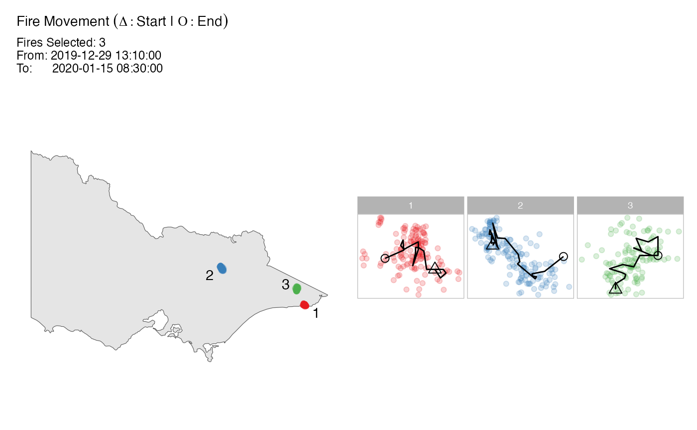

This function takes a spotoroo object to produce a plot of the
clustering results. It can be called by plot.spotoroo().
plot_spotoroo( result, type = "def", cluster = "all", hotspot = TRUE, noise = FALSE, ignition = TRUE, from = NULL, to = NULL, step = 1, mainBreak = NULL, minorBreak = NULL, dateLabel = NULL, bg = NULL )
Arguments
| result |
|
|---|---|
| type | character; type of the plot; one of "def" (default), "timeline" (timeline) and "mov" (fire movement). |
| cluster | character/integer; if "all", plot all clusters. if a integer
vector is given, plot corresponding clusters; unavailable in
|
| hotspot | logical; if |
| noise | logical; if |
| ignition | logical; if |
| from | OPTIONAL; date/datetime/numeric; start time; the data type needs to be the same as the provided observed time. |
| to | OPTIONAL; date/datetime/numeric; end time; the data type needs to be the same as the provided observed time. |
| step | integer (>=0); step size used in the calculation of the
fire movement; only used in |
| mainBreak | OPTIONAL; character/numeric; a string/value giving the
difference between major breaks; if the
observed time is in date/datetime
format,
this value will pass to
|
| minorBreak | OPTIONAL; character/numeric; a string/value giving the
difference between minor breaks; if the
observed time is in date/datetime
format,
this value will pass to
|
| dateLabel | OPTIONAL; character; a string giving the formatting
specification for the labels; if the
observed
time is in date/datetime format,
this value will pass to
|
| bg | OPTIONAL; |
Value
ggplot object; the plot of the clustering results.
Details
if type is "def", the clustering results will be plotted spatially.
See also plot_def(). Available arguments:
resulttypeclusterignitionhotspotnoisefrom(OPTIONAL)to(OPTIONAL)bg(OPTIONAL)
if type is "mov", plot of the fire movement will be made.
See also plot_fire_mov(). Available arguments:
resulttypeclusterhotspotfrom(OPTIONAL)to(OPTIONAL)stepbg(OPTIONAL)
if type is "timeline", plot of the timeline will be made.
See also plot_timeline(). Available arguments:
resulttypefrom(OPTIONAL)to(OPTIONAL)mainBreak(OPTIONAL)minorBreak(OPTIONAL)dateLabel(OPTIONAL)
Examples
# get clustering result result <- hotspot_cluster(hotspots, lon = "lon", lat = "lat", obsTime = "obsTime", activeTime = 24, adjDist = 3000, minPts = 4, minTime = 3, ignitionCenter = "mean", timeUnit = "h", timeStep = 1)#>#>#>#> Calling Core Function : `hotspot_cluster()` --#>#> 1 time index = 1 hours#> v Transform observed time > time indexes#> i 970 time indexes found#>#> activeTime = 24 time indexes | adjDist = 3000 meters#> v Cluster#> i 16 clusters found (including noise)#>#> minPts = 4 hot spots | minTime = 3 time indexes#> v Handle noise#> i 6 clusters left#> i noise proportion : 0.935 %#>#> ignitionCenter = 'mean'#> v Compute ignition points for clusters#> i average hot spots : 176.7#> i average duration : 131.9 hours#>#> Time taken = 0 mins 4 secs for 1070 hot spots#> i 0.004 secs per hot spot#>#> --------------------------------------------------------------------------------